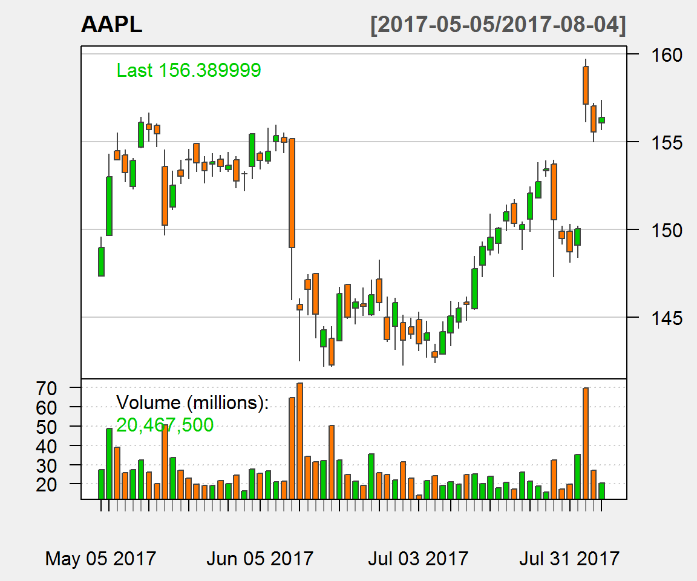

Chapter 2 Data Structures
There are different data types that are commonly used in R among which the most important ones are the following:
Numeric (or double): these are used to store real numbers. Examples: -4, 12.4532, 6.
Integer: examples: 2L, 12L.
Logical (or boolean): examples:
TRUE,FALSE.Character: examples:
"a","Bonjour".
In R there are basically five types of data structures in which elements can be stored. A data structure is said to homogeneous if it only contains elements of the same type (for example it only contains character or numeric values) and heterogenous if it contains elements of more than one type. The five types of data structrures are commonly summarized in a table similar to the one below:
| Dimension | Homogenous | Heterogeneous |
|---|---|---|
| 1 | Vector | List |
| 2 | Matrix | Dataframe |
| n | Array |
To illustrate how to use these data structures, we will consider the simple data set of the five best male single tennis players (as ranked by ATP on 07-15-2017). The data are presented in the table below:
| Name | Date of Birth | Born | Country | ATP Ranking | Prize Money | Win Percentage | Grand Slam Wins |
|---|---|---|---|---|---|---|---|
| Andy Murray | 15 May 1987 | Glasgow, Scotland | Great Britain | 1 | 60,449,649 | 78.07 | 9 |
| Rafael Nadal | 3 June 1986 | Manacor, Spain | Spain | 2 | 85,920,132 | 82.48 | 15 |
| Stan Wawrinka | 28 March 1985 | Lausanne, Switzerland | Switzerland | 3 | 30,577,981 | 63.96 | 5 |
| Novak Djokovic | 22 May 1987 | Belgrade, Serbia | Serbia | 4 | 109,447,408 | 82.77 | 12 |
| Roger Federer | 8 August 1981 | Basel, Switzerland | Switzerland | 5 | 104,445,185 | 81.80 | 18 |
It can be noticed that this data set contains columns with a variety of data types and in the next sections we will focus on these different types separately.
2.1 Vectors
A vector has three important properties:
- Type, which corresponds the “kind” of objects in contains. It is possible to use the function
typeof()to evaluate the type of objects in a vector. - Length, i.e. the number of elements in a vector. This information can be obtained using the function
length(). - Attributes, some additional metadata attached to a vector. The functions
attr()andattributes()can be used to store and retrive attributes (more details can be found in Section 2.1.4)
For example, let us consider the number of grand slams won by the five players we are considering which are reported in the eigth column of the dataset:
grand_slam_win = c(9, 15, 5, 12, 18)To display the values stored in grand_slam_win we could simply enter the following in the R console:
grand_slam_win## [1] 9 15 5 12 18Alteratively, we could have created and displayed the value by using () around the definition of the object itself as follows:
(grand_slam_win = c(9, 15, 5, 12, 18))## [1] 9 15 5 12 18Various forms of “nested concatenation” can be used to defined vectors, for example we could also define grand_slam_win as
(grand_slam_win = c(9, c(15, 5, c(12, c(18)))))## [1] 9 15 5 12 18This approach is often used to assemble vectors in various ways.
It is also possible to define vector with characters, for example we could define a vector with the player names as follows:
(players = c("Andy Murray", "Rafael Nadal", "Stan Wawrinka",
"Novak Djokovic", "Roger Federer"))## [1] "Andy Murray" "Rafael Nadal" "Stan Wawrinka" "Novak Djokovic"
## [5] "Roger Federer"2.1.1 Type
We can evaluate the kind or type of elements that are stored in a vector using the function typeof(). For example, for the vectors we just created we obtain:
typeof(grand_slam_win)## [1] "double"typeof(players)## [1] "character"This is a little surprising as all the elements in grand_slam_win are integers and it would therefore seem natural to expect this as an output of the function typeof(). This is because R considers any number as a “double” by default, except when adding the suffix L after an integer. For example:
typeof(1)## [1] "double"typeof(1L)## [1] "integer"Therefore, we could express grand_slam_win as follows:
(grand_slam_win_int = c(9L, 15L, 5L, 12L, 18L))## [1] 9 15 5 12 18typeof(grand_slam_win_int)## [1] "integer"Naturally, the difference between the two in general is relatively unimportant but we can see that grand_slam_win_int takes less “space” among the two. Indeed we have
object.size(grand_slam_win)## 88 bytesobject.size(grand_slam_win_int)## 72 bytes2.1.2 Coercion
As indicated earlier, a vector has a homogenous data structure meaning that it can only contain a single type among all the data types. Therefore, when more than one data type is provided, R coerces the data into a “shared” type. To identify this “shared” type we can use this simple rule:
\[\begin{equation*} \text{logical} < \text{integer} < \text{numeric} < \text{character}, \end{equation*}\]which simply means that if a vector contains more than one data type, the “shared” type will be that of the “largest” type according to the above equations. Here are a few examples:
# Logical + integer
(mix_logic_int = c(TRUE, 1L))## [1] 1 1typeof(mix_logic_int)## [1] "integer"# Logical + character
(mix_logic_char = c(TRUE, "Hi"))## [1] "TRUE" "Hi"typeof(mix_logic_char)## [1] "character"# Integer + numeric
(mix_int_num = c(1, 1L))## [1] 1 1typeof(mix_int_num)## [1] "double"# Integer + character
(mix_int_char = c(1L, "Hi"))## [1] "1" "Hi"typeof(mix_int_char)## [1] "character"2.1.3 Subsetting
Naturally, it is possible to “subset” the values of in our vectror in many ways. Essentially, there are four main ways of subsetting a vector. Here we’ll only discuss the first three:
- Positive Index: We can access or subset the \(i\)-th element of a vector by simply using
grand_slam_win[i]where \(i\) is a positive number between 1 and length of the vector.
# Accesing the first element
grand_slam_win[1]## [1] 9# Accesing the third and first value
grand_slam_win[c(3, 1)]## [1] 5 9# Duplicated indices yield duplicated values
grand_slam_win[c(1, 1, 2, 2, 3, 4)]## [1] 9 9 15 15 5 12- Negative Index: We remove elements in a vector using negative indices:
# Removing the second obervation
grand_slam_win[-2]## [1] 9 5 12 18# Removing the first and fourth obserations
grand_slam_win[c(-1, -4)]## [1] 15 5 18- Logical Indices: Another usefull approach is based on logical operators:
# Access the first and fourth observations
grand_slam_win[c(TRUE, FALSE, FALSE, TRUE, FALSE)]## [1] 9 12grand_slam_win[c(1.2, 3.4)] (which rounds things up) or grand_slam_win[c(-1, 2)] (which doesn’t work as “mixed” indices are not permitted).
2.1.4 Attributes
Let’s suppose that we conducted an experiment under specific conditions, say a date and a place which should be stored as attributes of the object containing the results of this experiment. Indeed, objects can have arbitrary additional attributes that are used to store metadata on the object of interest. For example:
attr(grand_slam_win, "date") = "07-15-2017"
attr(grand_slam_win, "type") = "Men, Single"To display the vector with its attributes
grand_slam_win## [1] 9 15 5 12 18
## attr(,"date")
## [1] "07-15-2017"
## attr(,"type")
## [1] "Men, Single"To only display the attributes we have
attributes(grand_slam_win)## $date
## [1] "07-15-2017"
##
## $type
## [1] "Men, Single"It is also possible to extract a specific attribute
attr(grand_slam_win, "date")## [1] "07-15-2017"2.1.5 Adding labels
In some cases it might be useful to add labels to vectors. For example, we could define the vector grand_slam_win and use the player’s names as labels, i.e.
(grand_slam_win = c("Andy Murray" = 9, "Rafael Nadal" = 15,
"Stan Wawrinka" = 5, "Novak Djokovic" = 12,
"Roger Federer" = 18))## Andy Murray Rafael Nadal Stan Wawrinka Novak Djokovic Roger Federer
## 9 15 5 12 18The main advantage of this approach is that the number of grand slams won can now be referred to by the player’s name. For example:
grand_slam_win["Andy Murray"]## Andy Murray
## 9grand_slam_win[c("Andy Murray","Roger Federer")]## Andy Murray Roger Federer
## 9 18All labels (players’ names in our case) can be obtained witht the function names, i.e.
names(grand_slam_win)## [1] "Andy Murray" "Rafael Nadal" "Stan Wawrinka" "Novak Djokovic"
## [5] "Roger Federer"2.1.6 Useful functions with vectors
The reason for extracting or creating vectors often lies in the need to collect information from them. For this purpose, a series of useful functions are available that allow to extract information or arrange the vector elements in a certain manner which can be of interest to the user. Among the most commonly used functions we can find the following ones
length() sum() mean() sort() and order()
whose name is self-explicative in most cases. For example we have
length(grand_slam_win)## [1] 5sum(grand_slam_win)## [1] 59mean(grand_slam_win)## [1] 11.8To sort the players by number of grand slam wins, we could use the function order() which returns the position of the elements of a vector sorted in an ascending order,
order(grand_slam_win)## [1] 3 1 4 2 5Therefore, we can sort the players in ascending order of wins as follows
players[order(grand_slam_win)]## [1] "Stan Wawrinka" "Andy Murray" "Novak Djokovic" "Rafael Nadal"
## [5] "Roger Federer"which implies that Roger Federer won most grand slams. Another related function is sort() which simply sorts the elements of a vector in an ascending manner. For example,
sort(grand_slam_win)## Stan Wawrinka Andy Murray Novak Djokovic Rafael Nadal Roger Federer
## 5 9 12 15 18which is compact version of
grand_slam_win[order(grand_slam_win)]## Stan Wawrinka Andy Murray Novak Djokovic Rafael Nadal Roger Federer
## 5 9 12 15 18There are of course many other useful functions that allow to deal with vectors which we will not mention in this section but can be found in a variety of references (see for example Wickham (2014)).
2.1.7 Creation sequences
When uing R for statistical programming or even data analysis it is very common to create sequences of numbers. Here are three common ways used to create such sequences:
from:to: This method is quite inituitive and very compact. For example:
(x = 1:3)## [1] 1 2 3(y = 3:1)## [1] 3 2 1(w = -1:-4)## [1] -1 -2 -3 -4(z = 1.3:3)## [1] 1.3 2.3seq_len(n): This function provides a simple way to generate a sequence from 1 to an arbitrary numbern. In general,1:nandseq_len(n)are equivalent with the notable exeptions wheren = 0andn < 0. The reason for these exeptions will become clear in Section ??. Let’s see a few examples:
n = 3
1:n## [1] 1 2 3seq_len(n)## [1] 1 2 3n = 0
1:n## [1] 1 0seq_len(n)## integer(0)seq(a, b, by/length.out = d): This function can be used to create more “complex” sequences. It can either be used to create a sequence fromatobby increments ofd(using the optionby) or of a total length ofd(using the optionlength.out). A few examples:
(x = seq(1, 2.8, by = 0.4))## [1] 1.0 1.4 1.8 2.2 2.6(y = seq(1, 2.8, length.out = 6))## [1] 1.00 1.36 1.72 2.08 2.44 2.80It could be interesting to use a function like rep() that allows to create vectors with repeated values or sequences, for example:
rep(c(1,2), times = 3, each = 1)## [1] 1 2 1 2 1 2rep(c(1,2), times = 1, each = 3)## [1] 1 1 1 2 2 2where the option times allows to specify how many times the object needs to be repeated and each regulates how many times each element in the object is repeated.
2.1.8 Example: Apple Stock Price
Suppose that one is interested in analysing the behavior of Apple’s stoch price over the last three months. The first thing that is need is today’s date which can be obtained as follows
(today = Sys.Date())## [1] "2017-07-28"Once this is done, we can obtain the date which is exactly three monmths ago
(three_months_ago = seq(today, length = 2, by = "-3 months")[2])## [1] "2017-04-28"With this information, we can now download Apple’s stock price and represent these stocks through a candlestick chart which summarizes information on daily opening and closing prices as well as minimum and maximum prices.
library(quantmod)
getSymbols("AAPL", from = three_months_ago, to = today)## [1] "AAPL"candleChart(AAPL, theme='white', type='candles')
Once we have the prices, we can compute some returns which are defined as follows
\[\begin{equation} r_t = \frac{S_t - S_{t-1}}{S_{t-1}} \end{equation}\]where \(r_t\) are the returns at time t and \(S_t\) is the stock price. This is implemented in the function ClCl() within the quantmod package. For example, we can create a vector of returns as follows
AAPL_returns = as.numeric(na.omit(ClCl(AAPL)))where na.omit is used to remove missing values in the stock prices vector since, if we have \(n+1\) stock prices, we will only have \(n\) returns and as.numeric is used to transform the computed returns into a numeric vector. We can now compute the mean and median of the returns over the considered period
mean(AAPL_returns)## [1] 0.0008296052median(AAPL_returns)## [1] 0.002994722However, a statistic that is of particular interest to financial operators is the Excess Kurtosis which, for a random variable that we denote as \(X\), can be defined as
\[\begin{equation} \text{Kurt} = \frac{{E}\left[\left(X - E[X]\right)^4\right]}{\left({E}\left[\left(X - E[X]\right)^2\right]\right)^2} - 3 \end{equation}\]The reason for defining this statistic as Excess Kurtosis lies in the fact that the standardized kurtosis is compared to that of a Gaussian distribution (whose kurtosis is equal to 3) which has exponentially decaying tails. Consequently, if the Excess Kurtosis is positive, this implies that the distribution has heavier tails than a Gaussian and therefore has higher probabilities of extreme events occurring. Given this statistic, it is useful to compute this on the observed data and for this purpose a common estimator of the excess Kurtosis is
\[\begin{equation} k = \frac{\frac{1}{n} \sum_{t = 1}^{n} \left(r_t -\bar{r}\right)^4}{\left(\frac{1}{n} \sum_{t = 1}^{n} \left(r_t -\bar{r}\right)^2 \right)^2} - 3 \end{equation}\]where \(\bar{k}\) denotes the sample average of the returns, i.e.
\[\begin{equation} \bar{k} = \frac{1}{n} \sum_{i = 1}^n r_i \end{equation}\]mu = mean(AAPL_returns)
(k = mean((AAPL_returns - mu)^4)/(mean((AAPL_returns - mu)^2))^2 - 3)## [1] 1.854458which is quite high tends to indicate the returns have a heavier tails than the normal distribution.
2.2 Matrix
Matrices are another extremely common data structure in R. Compared to vectors, matrices have an additional dimension which, for example, allows to stock multiple equidimensional vectors within the same object. Below is an example of how to create a matrix in R:
(mat = matrix(1:12, ncol = 4, nrow = 3))## [,1] [,2] [,3] [,4]
## [1,] 1 4 7 10
## [2,] 2 5 8 11
## [3,] 3 6 9 12Notice that the first argument to the function is a vector (in this case a vector with increasing elements from 1 to 12) which is then transformed into a matrix with four columns (ncol = 4) and three rows (nrow = 3).
By default, the vectors are transformed into matrices by placing the elements by column (i.e. starting from the top of the first column to the bottom and then passing to the following column until all columns are full). If you wish to fill the matrix by row, all you need to do is specify the argument byrow = T.
Usually the length of the vector (i.e. number of elements in the vector) is the result of the multiplication between the number of columns and number of rows. What happens if the vector has fewer elements for the same matrix dimension? What happens if the vector has more elements?
It is often the case however that we already have equidimensional vectors available and we wish to stock them into a matrix. In these cases, two useful functions are cbind() and rbind() where the first function stocks the vectors vertically side-by-side while the second stocks the vectors horizontally one below the other. An example of the former is given below:
players = c("Andy Murray", "Rafael Nadal", "Stan Wawrinka",
"Novak Djokovic", "Roger Federer")
grand_slam_win = c(9, 15, 5, 12, 18)
win_percentage = c(78.07, 82.48, 63.96, 82.77, 81.80)
(mat = cbind(grand_slam_win, win_percentage))## grand_slam_win win_percentage
## [1,] 9 78.07
## [2,] 15 82.48
## [3,] 5 63.96
## [4,] 12 82.77
## [5,] 18 81.80The result in this case is a \(5 \times 2\) matrix (while with rbind() it would have been a \(2 \times 5\) matrix). Once the matrix is defined, we can assign names to its rows and columns by using resepctively rownames and colnames. Of course, the number of names must correspond to the respective matrix dimensions as shown in the following example where each row corresponds to a specific player (thereby using the players vector) and each column corresponds to a specific statistic on the players.
rownames(mat) <- players
colnames(mat) <- c("GS win", "Win rate")
mat## GS win Win rate
## Andy Murray 9 78.07
## Rafael Nadal 15 82.48
## Stan Wawrinka 5 63.96
## Novak Djokovic 12 82.77
## Roger Federer 18 81.802.2.1 Subsetting
As for vectors, it is possible to subset the elements of a matrix. However, in the case of matrices we’re dealing with two-dimensional data structures and it is therefore necessary to specify the position of the elements of interest in both dimensions. For this purpose, as with vectors, we can use [ ] but, as opposed to vectors, we need to add , within the square brackets where the rows are specified before the comma and the columns after it. Below are a few examples:
mat[c("Stan Wawrinka", "Roger Federer"), ]## GS win Win rate
## Stan Wawrinka 5 63.96
## Roger Federer 18 81.80mat[c(1, 3), ]## GS win Win rate
## Andy Murray 9 78.07
## Stan Wawrinka 5 63.96mat[, 2]## Andy Murray Rafael Nadal Stan Wawrinka Novak Djokovic Roger Federer
## 78.07 82.48 63.96 82.77 81.80mat[1:3, 1]## Andy Murray Rafael Nadal Stan Wawrinka
## 9 15 5It can be noticed that, when a space is left blank before or after the comma, this means that respectively all the rows or all the columns are considered.
2.2.2 Useful Functions to Work with Matrices
As with vectors, there are some useful functions that can be used with matrices. A first example is the function dim() that allows to determine the dimension of a matrix. For example, consider the following \(4 \times 2\) matrix
which can be created in R as follows:
(A = matrix(1:8, 4, 2))## [,1] [,2]
## [1,] 1 5
## [2,] 2 6
## [3,] 3 7
## [4,] 4 8Therefore, we expect dim(A) to retrun the vector c(4, 2). Indeed, we have
dim(A)## [1] 4 2Next, we consider the function t() allows transpose a matrix. For example, \(\mathbf{A}^T\) is equal to:
which is a \(2 \times 4\) matrix. In R, we achieve this as follows
(At <- t(A))## [,1] [,2] [,3] [,4]
## [1,] 1 2 3 4
## [2,] 5 6 7 8dim(At)## [1] 2 4Aside from playing with matrix dimensions, matrix algebraic operations have specific commands. For example, the operator %*% is used in R to denote matrix multiplication while, as opposed to scalar objects, the regular product operator * performs the Hadamard product (or element by element product) when applied to matrices. For example, consider the following matrix product
which can be done in R as follows:
(B = At %*% A)## [,1] [,2]
## [1,] 30 70
## [2,] 70 174Other common matrix operations include finding the determinant of a matrix and finding its inverse. These are often used, for example, when computing the likelihood function for a variable following a Gaussian distribution or when simulating time series or spatial data. The functions that perform these operations are det() and solve() that respectively find the determinant and the inverse of a matrix (which necessarily has to be square). The function det() can be used to compute the determinant of a (squared) matrix. In the case of a \(2 \times 2\) matrix, there exists a simple solution for the determinant which is
Consider the matrix \(\mathbf{B}\), we have
\[\begin{equation*} \text{det} \left( \mathbf{B}\right) = 30 \cdot 174 - 70^2 = 320. \end{equation*}\]In R, we can simply do
det(B)## [1] 320The function solve() is also an important function when working with matrices as it allows to inverse a matrix. It is worth remembering that a square matrix that is not invertible (i.e. \(\mathbf{A}^{-1}\) doesn’t exist) is called singular and the determinant offers a way to “check” if this is the case for a given matrix. Indeed, a square matrix is singular if and only if its determinant is 0. Therefore, in the case of \(\mathbf{B}\), we should be able to compute its inverse. As for the determinant, there exists a formula to compute the inverse of \(2 \times 2\) matrices, i.e.
Considering the matrix \(\mathbf{B}\), we obtain
\[\begin{equation*} \mathbf{B}^{-1} = \left[ \begin{matrix} 30 & 70\\ 70 & 174 \end{matrix} \right]^{-1} = \frac{1}{320}\left[ \begin{matrix} \phantom{-}174 & -70\\ -70 & \phantom{-}30 \end{matrix} \right] = \end{equation*}\](B_inv = solve(B))## [,1] [,2]
## [1,] 0.54375 -0.21875
## [2,] -0.21875 0.09375Finally, we can verify that
\[\begin{equation*} \mathbf{G} = \mathbf{B} \mathbf{B}^{-1}, \end{equation*}\]should be equal to the identity matrix,
(G = B %*% B_inv)## [,1] [,2]
## [1,] 1 -8.881784e-16
## [2,] 0 1.000000e+00The result is of course extremely close but \(\mathbf{G}\) is not exactly equal to the identity matrix due to rounding and other numerical errors.
Another function of interest is the function diag() that can be used to extract the diagonal of a matrix. For example, we have
which can be done in R as follows:
diag(B)## [1] 30 174Therefore, the function diag() allows to easily compute the trace of matrix (i.e. the sum of the diagonal elements). For example,
or in R
sum(diag(B))## [1] 204Another use of the function diag() is to create diagonal matrices. Indeed, if the argument of this function is a vector, its behavior is the following:
Therefore, this provides a simple way of creating an identity matrix by combining the functions diag() and rep() (discussed in the previous section) as follows:
n = 4
(ident = diag(rep(1, n)))## [,1] [,2] [,3] [,4]
## [1,] 1 0 0 0
## [2,] 0 1 0 0
## [3,] 0 0 1 0
## [4,] 0 0 0 12.2.3 Example: Summary Statistics with Matrix Notation
A simple example of the operations we discussed in the previous section is given by many common statistics that can be reexpressed using matrix notation. As an example, we will consider three common statistics that are the sample mean, variance and covariance. Let us consider the following two samples of size \(n\)
\[\begin{equation*} \begin{aligned} \mathbf{x} &= \left[x_1 \;\; x_2 \; \;\cdots \;\; x_n\right]^T\\ \mathbf{y} &= \left[y_1 \;\;\; y_2 \; \;\;\cdots \;\;\; y_n\right]^T. \end{aligned} \end{equation*}\]The sample mean of \(\mathbf{x}\) is
\[\begin{equation*} \bar{x} = \frac{1}{n} \sum_{i = 1}^{n} x_i, \end{equation*}\]and its sample variance is
\[\begin{equation*} s_x^2 = \frac{1}{n} \sum_{i = 1}^n \left(x_i - \bar{x}\right)^2. \end{equation*}\]The sample covariance between \(\mathbf{x}\) and \(\mathbf{y}\) is
\[\begin{equation*} s_{x,y} = \frac{1}{n} \sum_{i = 1}^n \left(X_i - \bar{x}\right) \left(Y_i - \bar{y}\right), \end{equation*}\]where \(\bar{y}\) denotes the sample mean of \(\mathbf{y}\).
Consider the sample mean, this statistic can be expressed in matrix notation as follows
\[\begin{equation*} \bar{x} = \frac{1}{n} \sum_{i = 1}^{n} x_i = \frac{1}{n} \mathbf{x}^T \mathbf{1}, \end{equation*}\]where \(\mathbf{1}\) is a column vector of \(n\) ones.
\[\begin{equation*} \begin{aligned} s_x^2 &= \frac{1}{n} \sum_{i = 1}^n \left(x_i - \bar{x}\right)^2 = \frac{1}{n} \sum_{i = 1}^n x_i^2 - \bar{x}^2 = \frac{1}{n} \mathbf{x}^T \mathbf{x} - \bar{x}^2\\ &= \frac{1}{n} \mathbf{x}^T \mathbf{x} - \left(\frac{1}{n} \mathbf{x}^T \mathbf{1}\right)^2 = \frac{1}{n} \left(\mathbf{x}^T \mathbf{x} - \frac{1}{n} \mathbf{x}^T \mathbf{1} \mathbf{1}^T \mathbf{x}\right)\\ &= \frac{1}{n}\mathbf{x}^T \left( \mathbf{I} - \frac{1}{n} \mathbf{1} \mathbf{1}^T \right) \mathbf{x} = \frac{1}{n}\mathbf{x}^T \mathbf{H} \mathbf{x}, \end{aligned} \end{equation*}\]where \(\mathbf{H} = \mathbf{I} - \frac{1}{n} \mathbf{1} \mathbf{1}^T\). This matrix is often called the centering matrix. Similarly, for the sample covariance we obtain
\[\begin{equation*} \begin{aligned} s_{x,y} &= \frac{1}{n} \sum_{i = 1}^n \left(x_i - \bar{x}\right) \left(y_i - \bar{y}\right) = \frac{1}{n}\mathbf{x}^T \mathbf{H} \mathbf{y}. \end{aligned} \end{equation*}\]In the code below we verify the validity of these results by comparing the value of the three statistics based on the different formulas.
# Sample size
n = 100
# Simulate random numbers from a zero mean normal distribution with
# variance equal to 4.
x = rnorm(n, 0, sqrt(4))
# Simulate random numbers from normal distribution with mean 3 and
# variance equal to 1.
y = rnorm(n, 3, 1)
# Note that x and y are independent.
# Sample mean
one = rep(1, n)
(x_bar = 1/n*sum(x))## [1] -0.1143037(x_bar_mat = 1/n*t(x)%*%one)## [,1]
## [1,] -0.1143037# Sample variance
H = diag(rep(1, n)) - 1/n * one %*% t(one)
(s_x = 1/n * sum((x - x_bar)^2))## [1] 3.539234(s_x_mat = 1/n*t(x) %*% H %*% x)## [,1]
## [1,] 3.539234# Sample covariance
y_bar = 1/n*sum(y)
(s_xy = 1/n*sum((x - x_bar)*(y - y_bar)))## [1] -0.1127139(s_xy_mat = 1/n*t(x) %*% H %*% y)## [,1]
## [1,] -0.11271392.2.4 Example: Least-squares
If the matrix \(\left(\mathbf{X}^T \mathbf{X}\right)^{-1}\), the least-squares estimator for \(\boldsymbol{\beta}\) is given by:
\[\begin{equation} \hat{\boldsymbol{\beta}} = \left(\mathbf{X}^T \mathbf{X}\right)^{-1} \mathbf{X}^T \mathbf{y} \tag{2.1} \end{equation}\]In the comment box below, we derive Eq. (2.1). If you aren’t familiar with such calculation it might to read or something like this
The least-square estimator \(\hat{\boldsymbol{\beta}}\) can be defined as
\[\begin{equation*} \hat{\boldsymbol{\beta}} = \operatorname{argmin}_{\boldsymbol{\beta}} \; \left( \mathbf{y} - \mathbf{X}\boldsymbol{\beta} \right)^T \left( \mathbf{y} - \mathbf{X} \boldsymbol{\beta} \right) \end{equation*}\]The first step of this derivation is to rexpress the term \(\left( \mathbf{y} - \mathbf{X}\boldsymbol{\beta} \right)^T \left( \mathbf{y} - \mathbf{X} \boldsymbol{\beta} \right)\) as follows:
\[\begin{equation*} \left( \mathbf{y} - \mathbf{X}\boldsymbol{\beta} \right)^T \left( \mathbf{y} - \mathbf{X} \boldsymbol{\beta} \right) = \mathbf{y}^T\mathbf{y} + \boldsymbol{\beta}^T \mathbf{X}^T \mathbf{X} \boldsymbol{\beta} - 2 \boldsymbol{\beta}^T \mathbf{X}^T \boldsymbol{y}. \end{equation*}\]In case you were suprizied by the term \(2 \boldsymbol{\beta}^T \mathbf{X}^T \boldsymbol{y}\) remeber that a scalar can always be transpose with changing its value and therefore we have that $ ^T ^T = ^T $. Now, out next step is the compute
\[\begin{equation*} \frac{\partial}{\partial \, \boldsymbol{\beta}} \; \left( \mathbf{y} - \mathbf{X}\boldsymbol{\beta} \right)^T \left( \mathbf{y} - \mathbf{X} \boldsymbol{\beta} \right). \end{equation*}\]To do this we should remeber the following results
\[\begin{equation*} \frac{\partial}{\partial \, \boldsymbol{\beta}} \; \boldsymbol{\beta}^T \mathbf{X}^T \boldsymbol{y} = \boldsymbol{y}^T \mathbf{X}, \end{equation*}\]and
\[\begin{equation*} \frac{\partial}{\partial \, \boldsymbol{\beta}} \; \boldsymbol{\beta}^T \mathbf{X}^T \mathbf{X} \boldsymbol{\beta} = 2 \boldsymbol{\beta}^T \mathbf{X}^T \mathbf{X}. \end{equation*}\]The proof of these two results can for example be found in Propositions 7 and 9 of Prof. Barnes’ notes. Using these two results we obtain
\[\begin{equation*} \frac{\partial}{\partial \, \boldsymbol{\beta}} \; \left( \mathbf{y} - \mathbf{X}\boldsymbol{\beta} \right)^T \left( \mathbf{y} - \mathbf{X} \boldsymbol{\beta} \right) = 2 \boldsymbol{\beta}^T \mathbf{X}^T \mathbf{X} - 2 \boldsymbol{y}^T \mathbf{X}. \end{equation*}\]By solving for the first order condition (and under some technical assumptions not discussed here) we can redefine \(\hat{\boldsymbol{\beta}}\) through the follwing equation
\[\begin{equation*} \hat{\boldsymbol{\beta}}^T \mathbf{X}^T \mathbf{X} = \boldsymbol{y}^T \mathbf{X}, \end{equation*}\]which is equivalent to
\[\begin{equation*} \mathbf{X}^T \mathbf{X} \hat{\boldsymbol{\beta}} = \mathbf{X}^T \boldsymbol{y}. \end{equation*}\]If \(\left(\mathbf{X}^T \mathbf{X}\right)^{-1}\) exist, \(\hat{\boldsymbol{\beta}}\) is therefore given by
\[\begin{equation*} \hat{\boldsymbol{\beta}} = \left(\mathbf{X}^T \mathbf{X}\right)^{-1} \mathbf{X}^T \mathbf{y}, \end{equation*}\] which verifies Eq. (2.1).The variance of \(\hat{\boldsymbol{\beta}}\) is given by
\[\begin{equation} \text{Var} \left(\hat{\boldsymbol{\beta}} \right) = \sigma^2 \left(\mathbf{X}^T \mathbf{X}\right)^{-1}, \tag{2.2} \end{equation}\]the derivation of this results is explain in the comment box below.
We let \(\mathbf{A} = \left(\mathbf{X}^T \mathbf{X}\right)^{-1} \mathbf{X}^T\). Then, we have
\[\begin{equation*} \begin{aligned} \text{Var} \left(\hat{\boldsymbol{\beta}} \right) &= \text{Var} \left( \mathbf{A} \mathbf{y} \right) = \mathbf{A} \text{Var} \left( \mathbf{y} \right) \mathbf{A}^T = \sigma^2 \mathbf{A} \mathbf{A}^T \\ & = \sigma^2 \left(\mathbf{X}^T \mathbf{X}\right)^{-1} \mathbf{X}^T \mathbf{X} \left(\mathbf{X}^T \mathbf{X}\right)^{-1} = \sigma^2 \left(\mathbf{X}^T \mathbf{X}\right)^{-1}, \end{aligned} \end{equation*}\]which verifies Eq. (2.2). To understand the above derivation we might be usefull to remind and point out a few things:
- \(\text{Var} \left( \mathbf{A} \mathbf{y} \right) = \mathbf{A} \text{Var} \left( \mathbf{y} \right) \mathbf{A}^T\) since \(\mathbf{A}\) is not a random variable.
- \(\mathbf{A} \text{Var} \left( \mathbf{y} \right) \mathbf{A}^T = \sigma^2 \mathbf{A} \mathbf{A}^T\) since\(\text{Var} \left( \mathbf{y} \right) = \sigma^2 \mathbf{I}\) and therefore we have \(\mathbf{A} \text{Var} \left( \mathbf{y} \right) \mathbf{A}^T = \sigma^2 \mathbf{A} \mathbf{I} \mathbf{A}^T = \sigma^2 \mathbf{A} \mathbf{A}^T\).
- The result \(\mathbf{A} \mathbf{A}^T = (\mathbf{X}^T \mathbf{X})^{-1}\) is based on the fact that \((\mathbf{X}^T \mathbf{X})^{-1}\) is symmetric but this is not necessarily intuitive. Indeed, this follows from the fact that any square and invertible matrix \(\mathbf{B}\) is such that the inverse and transpose operator commute, meaning that \(( \mathbf{B}^T )^{-1} = ( \mathbf{B}^{-1} )^T\). Therefore since the matrix \(\mathbf{X}^T \mathbf{X}\) is square and (by assumption) invertible we have \([(\mathbf{X}^T \mathbf{X})^{-1}]^T = [(\mathbf{X}^T \mathbf{X})^{T}]^{-1} = ( \mathbf{X}^T \mathbf{X})^{-1}\).
In general, the residual variance is unknown and needs to estimate. A common and unbiased estimator of \(\sigma^2\) is given by
\[\begin{equation} \hat{\sigma}^2 = \frac{1}{n - p} \left( \mathbf{y} - \mathbf{X}\hat{\boldsymbol{\beta}} \right)^T \left( \mathbf{y} - \mathbf{X} \hat{\boldsymbol{\beta}}\right) \tag{2.3} \end{equation}\]DO YOU GUYS THINK WE SHOULD SHOW THE UNBIASEDNESS IN BOX HERE. THIS IS A LITTLE MORE ADVANCED AS WE NEED TO USE PROJECTION MATRICES AND THEIR PROPERTIES. LET ME KNOW.
Let’s implement Eq. (2.1) to (2.3) and compare with the lm() implemented in base R. Before doing maybe we could use the dataset hubble. I think it is quite cool as it can be used to estimate the “age” of the universe and test wether the estimate of the age of the universe by Creation Scientists (based on a reading of the Bible) is reasonable. This is an example based on Simon Woods book. If we do this example, we should add something on confidence interval and I think he could the normal distribution (instead of t-distribution) to avoid going into details. Anyway the t-test relies on Normal assumption which is hard to verify. In the following chapter, we could use this example to show the various form of boostrap (parametric, non-parametric, semi-parametric). Let me know what you think.
2.3 Array
2.4 List
2.5 Dataframe
2.5.1 Example: Making Maps
birth_place = c("Glasgow, Scotland", "Manacor, Spain", "Lausanne, Switzerland",
"Belgrade, Serbia", "Basel, Switzerland")library(ggmap)## Warning: package 'ggmap' was built under R version 3.4.1glasgow_coord = geocode("Glasgow, Scotland")glasgow_coord## lon lat
## 1 -4.251806 55.86424birth_coord = geocode(birth_place)birth_coord## lon lat
## 1 -4.251806 55.86424
## 2 3.209532 39.56972
## 3 6.632273 46.51965
## 4 20.448922 44.78657
## 5 7.588576 47.55960class(birth_coord)## [1] "data.frame"birth_coord$Players = players
birth_coord$GS = grand_slam_winbirth_coord## lon lat Players GS
## 1 -4.251806 55.86424 Andy Murray 9
## 2 3.209532 39.56972 Rafael Nadal 15
## 3 6.632273 46.51965 Stan Wawrinka 5
## 4 20.448922 44.78657 Novak Djokovic 12
## 5 7.588576 47.55960 Roger Federer 18Let’s represent this information graphically. We haven’t seen how to make graph yet so don’t worry to much about the details of how this graph is made
library(mapproj)
map <- get_map(location = 'Switzerland', zoom = 4)
ggmap(map) + geom_point(data = birth_coord,
aes(lon, lat, col = Players, size = GS)) +
scale_size(name="Grand Slam Wins") +
xlab("Longitude") + ylab("Latitude")2.6 Data frames
A data frame is the most common way of storing data in R, it has a 2D structure and shares properties of both the matrix and the list.
We can create a data frame using data.frame()
### Creation
players = c("Andy Murray", "Rafael Nadal", "Stan Wawrinka",
"Novak Djokovic", "Roger Federer")
grand_slam_win = c(9, 15, 5, 12, 18)
date_of_birth = c("15 May 1987", "3 June 1986", "28 March 1985",
"22 May 1981", "8 August 1981")
country = c("Great Britain", "Spain", "Switzerland",
"Serbia", "Switzerland")
ATP_ranking = c(1, 2, 3, 4, 5)
prize_money = c(60449649, 85920132, 30577981, 109447408, 104445185)
tennis = data.frame(date_of_birth, grand_slam_win, country,
ATP_ranking, prize_money)
dimnames(tennis)[[1]] = players
tennis## date_of_birth grand_slam_win country ATP_ranking
## Andy Murray 15 May 1987 9 Great Britain 1
## Rafael Nadal 3 June 1986 15 Spain 2
## Stan Wawrinka 28 March 1985 5 Switzerland 3
## Novak Djokovic 22 May 1981 12 Serbia 4
## Roger Federer 8 August 1981 18 Switzerland 5
## prize_money
## Andy Murray 60449649
## Rafael Nadal 85920132
## Stan Wawrinka 30577981
## Novak Djokovic 109447408
## Roger Federer 104445185We can check if we have achived our gooal by using:
is.data.frame(tennis)## [1] TRUE2.6.1 Combination
Different data frames can also be combined. Let say we want to add some ifomrmation to our initial table e.g. the player’s height and if he is right-handed or letf-handed.
We can do so by using cbind() and rbind():
height <- c(1.90, 1.85, 1.83, 1.88, 1.85)
hand <- c("R","L","R","R","R")
(tennis = cbind(tennis, data.frame(height, hand)))## date_of_birth grand_slam_win country ATP_ranking
## Andy Murray 15 May 1987 9 Great Britain 1
## Rafael Nadal 3 June 1986 15 Spain 2
## Stan Wawrinka 28 March 1985 5 Switzerland 3
## Novak Djokovic 22 May 1981 12 Serbia 4
## Roger Federer 8 August 1981 18 Switzerland 5
## prize_money height hand
## Andy Murray 60449649 1.90 R
## Rafael Nadal 85920132 1.85 L
## Stan Wawrinka 30577981 1.83 R
## Novak Djokovic 109447408 1.88 R
## Roger Federer 104445185 1.85 R2.6.2 Subsetting
Like for vectors, it is also possible to subset the values that we have stored in our data frames. Since data frames possess the characteristics of both lists and matrices: if you subset with a single vector, they behave like lists; if you subset with two vectors, they behave like matrices.
# Let say we want only want to know the country and date of
# birth of the players
# There are two ways to select columns from a data frame
# Like a list:
tennis[c("country", "date_of_birth")]## country date_of_birth
## Andy Murray Great Britain 15 May 1987
## Rafael Nadal Spain 3 June 1986
## Stan Wawrinka Switzerland 28 March 1985
## Novak Djokovic Serbia 22 May 1981
## Roger Federer Switzerland 8 August 1981# Like a matrix
tennis[, c("country", "date_of_birth")]## country date_of_birth
## Andy Murray Great Britain 15 May 1987
## Rafael Nadal Spain 3 June 1986
## Stan Wawrinka Switzerland 28 March 1985
## Novak Djokovic Serbia 22 May 1981
## Roger Federer Switzerland 8 August 1981# To acces a single element, let say the date of birth,
# you can also use:
tennis$date_of_birth## [1] 15 May 1987 3 June 1986 28 March 1985 22 May 1981 8 August 1981
## 5 Levels: 15 May 1987 22 May 1981 28 March 1985 ... 8 August 19812.6.3 Application: Non-parametric bootstrap
Suppose we ask 10 students how much time they work at home for their calculus class, we obtain the following results (in hour)
student_work <- c(0, 0, 0, 0.25, 0.25, 0.75, 0.75, 1, 1.25, 4)We can compute the mean time spent
mean(student_work)## [1] 0.825ADD SOMETHING ON T TEST
t.test(student_work)$conf.int## [1] -0.03495865 1.68495865
## attr(,"conf.level")
## [1] 0.95We can see that our confidence interval includes a negative values which clearly isn’t meaningful. Solution: (non-parametric) bootstrap which works as follows….. ADD SOMETHING
Here is a simple function to implement this approach:
# Number of boostrap replications
B = 500
# Compute the length of vector
n = length(student_work)
# Confidence level
alpha = 0.05
# Initialisation of
boot_mean = rep(NA, B)
for (i in 1:B){
student_work_star = student_work[sample(1:n, replace = TRUE)]
boot_mean[i] = mean(student_work_star)
}
quantile(boot_mean, c(alpha/2, 1 - alpha/2))## 2.5% 97.5%
## 0.275000 1.763125#hist(boot_mean, probability = TRUE)GitHub
Wickham, Hadley. 2014. Advanced R. CRC Press.